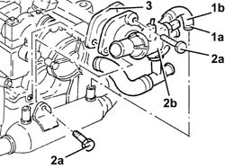
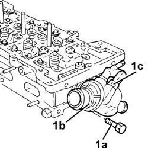

1088C32 THERMOSTAT UNIT - R + R WITH CYLINDER HEAD REMOVED
- Path
- Procedures > 10 ENGINE > 1088 ENGINE COOLING > 1088C WATER PUMP AND THERMOSTAT > 1088C32 THERMOSTAT UNIT - R + R WITH CYLINDER HEAD REMOVED
- Kind
- repair procedure (removal / refitting; the operation number is the code)
- Applies to
- engines: 1.9 JTD 8v, 2.4 JTD 20v; all production periods
- Interactive page
- https://sloeber94.github.io/elrnDB-fCrm/en/#/194000177
Applies to: engines: 1.9 JTD 8v; all production periods
 Removing
Removing
 Refitting
Refitting1. Loosen the band (1a) and disconnect the pipe (1b) from the thermostat to the heat exchanger, heat exchanger side.
2. Undo the bolts (2a) and remove the thermostat (2b) complete with pipe and sensor.
3. Remove the gasket.

Applies to: engines: 1.9 JTD 8v; all production periods
Refitting
RemovingPlace the gasket back in its housing.
Place the thermostat complete with gasket, pipes and sensor back in its housing and tighten the bolts to the recommended torque.
Fastening | Component | Ø | Value (daNm) | |
|---|---|---|---|---|
- | Bolt | THERMOSTAT | M8 | (Cylinder head side) 2.1 - 2.6 |
Connect the pipe from the thermostat to the heat exchanger, heat exchanger side and tighten the band.
Applies to: engines: 2.4 JTD 20v; all production periods
Removing
Refitting1. Undo the bolts (1a) and remove the thermostat (1b) complete with coolant temperature sensor (1c).
Remove the gasket.

Applies to: engines: 2.4 JTD 20v; all production periods
Refitting
RemovingRefit the thermostat with gasket and coolant temperature sensor in its seat.
Tighten the retaining bolts to the recommended torque.
Value daNm | Fastening | Component | Ø | |
|---|---|---|---|---|
. | 2.5 | Bolt | THERMOSTAT | M8 |